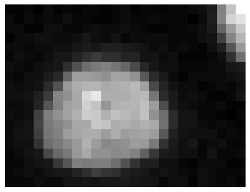

CytoTable with Iceberg profiles and images¶
This notebook shows how CytoTable can:
write a materialized
profiles.joined_profilestablewrite cropped images to
images.image_cropsoptionally write whole source images to
images.source_imagesread both Iceberg and single-Parquet outputs through the same
cytotable.read_tableandcytotable.list_tablesAPI
The example uses the local ExampleHuman CellProfiler dataset bundled with the
repository test data.
import pathlib
import shutil
import cytotable
from ome_arrow import OMEArrow
# paths used throughout the notebook
source_path = "../../../tests/data/cellprofiler/ExampleHuman"
warehouse_path = pathlib.Path("./examplehuman_iceberg_warehouse")
parquet_path = pathlib.Path("./examplehuman.parquet")
Remove prior outputs so the example can be rerun cleanly.
if warehouse_path.exists():
shutil.rmtree(warehouse_path)
if parquet_path.exists():
parquet_path.unlink()
Show the available CellProfiler source files.
sorted(path.name for path in pathlib.Path(source_path).glob("*"))
['AS_09125_050116030001_D03f00d0.tif',
'AS_09125_050116030001_D03f00d0_Overlay.png',
'AS_09125_050116030001_D03f00d1.tif',
'AS_09125_050116030001_D03f00d2.tif',
'Cells.csv',
'Cytoplasm.csv',
'ExampleHuman.cppipe',
'Experiment.csv',
'Image.csv',
'Nuclei.csv',
'PH3.csv']
Build an Iceberg warehouse with joined profiles, image crops, and source images¶
%%time
iceberg_result = cytotable.convert(
source_path=source_path,
source_datatype="csv",
dest_path=str(warehouse_path),
dest_backend="iceberg",
dest_datatype="parquet",
preset="cellprofiler_csv",
image_dir=source_path,
include_source_images=True,
)
print(iceberg_result)
/Users/buntend/Documents/work/CytoTable/docs/source/examples/examplehuman_iceberg_warehouse
CPU times: user 1min 2s, sys: 2.8 s, total: 1min 5s
Wall time: 1min 24s
List the tables and views in the warehouse using the top-level CytoTable API.
cytotable.list_tables(warehouse_path)
['images.image_crops',
'images.source_images',
'profiles.joined_profiles',
'profiles.profile_with_images']
Read the joined measurement table.
joined_profiles = cytotable.read_table(warehouse_path, "joined_profiles")
joined_profiles[["Metadata_ObjectID"]].head()
| Metadata_ObjectID | |
|---|---|
| 0 | obj-f5800564-ea8c-570e-b804-7f057a18de43 |
| 1 | obj-5f8d57f7-f250-5172-be79-d246cf5567bc |
| 2 | obj-44e0b10d-2a93-5d30-acb2-d5d6f5d9ae45 |
| 3 | obj-ab5e94f3-f3fa-5168-809a-3689b75bbfd3 |
| 4 | obj-3f001126-0d7c-5728-b792-835da9abb98c |
Read the object-level image crop table.
image_crops = cytotable.read_table(warehouse_path, "image_crops")
image_crops[
[
"Metadata_ObjectID",
"Metadata_ImageCropID",
"source_image_file",
"ome_arrow_image",
]
].head()
| Metadata_ObjectID | Metadata_ImageCropID | source_image_file | ome_arrow_image | |
|---|---|---|---|---|
| 0 | obj-f5800564-ea8c-570e-b804-7f057a18de43 | obj-775aedfc-97c5-59f6-a22e-bbb089c310b3 | AS_09125_050116030001_D03f00d0.tif | {'type': 'ome.arrow', 'version': '0.0.8', 'id'... |
| 1 | obj-f5800564-ea8c-570e-b804-7f057a18de43 | obj-de8f365c-1639-530d-92ad-69a2b2d4838c | AS_09125_050116030001_D03f00d1.tif | {'type': 'ome.arrow', 'version': '0.0.8', 'id'... |
| 2 | obj-f5800564-ea8c-570e-b804-7f057a18de43 | obj-a9019963-9396-5447-b70c-983e33157212 | AS_09125_050116030001_D03f00d2.tif | {'type': 'ome.arrow', 'version': '0.0.8', 'id'... |
| 3 | obj-5f8d57f7-f250-5172-be79-d246cf5567bc | obj-431b50d8-4f13-5d43-9afc-1efa34c86a24 | AS_09125_050116030001_D03f00d0.tif | {'type': 'ome.arrow', 'version': '0.0.8', 'id'... |
| 4 | obj-5f8d57f7-f250-5172-be79-d246cf5567bc | obj-997d7b1b-bc08-57ff-b084-40de999c9a76 | AS_09125_050116030001_D03f00d1.tif | {'type': 'ome.arrow', 'version': '0.0.8', 'id'... |
Read the full source image table.
source_images = cytotable.read_table(warehouse_path, "source_images")
source_images[
[
"Metadata_ImageID",
"source_image_file",
"ome_arrow_image",
]
].head()
| Metadata_ImageID | source_image_file | ome_arrow_image | |
|---|---|---|---|
| 0 | obj-d2b0bf00-10ce-5068-80ff-0307738ff67c | AS_09125_050116030001_D03f00d0.tif | {'type': 'ome.arrow', 'version': '0.0.8', 'id'... |
| 1 | obj-a6df374f-a801-5291-a756-730a6d192529 | AS_09125_050116030001_D03f00d1.tif | {'type': 'ome.arrow', 'version': '0.0.8', 'id'... |
| 2 | obj-a68bb17e-cfde-5f67-9268-c26c9f89ad97 | AS_09125_050116030001_D03f00d2.tif | {'type': 'ome.arrow', 'version': '0.0.8', 'id'... |
Read the profile-centric manifest view that joins profile rows to image crop references.
profile_with_images = cytotable.read_table(warehouse_path, "profile_with_images")
profile_with_images[["Metadata_ObjectID", "source_image_file"]].head()
| Metadata_ObjectID | source_image_file | |
|---|---|---|
| 0 | obj-f5800564-ea8c-570e-b804-7f057a18de43 | AS_09125_050116030001_D03f00d0.tif |
| 1 | obj-f5800564-ea8c-570e-b804-7f057a18de43 | AS_09125_050116030001_D03f00d1.tif |
| 2 | obj-f5800564-ea8c-570e-b804-7f057a18de43 | AS_09125_050116030001_D03f00d2.tif |
| 3 | obj-5f8d57f7-f250-5172-be79-d246cf5567bc | AS_09125_050116030001_D03f00d0.tif |
| 4 | obj-5f8d57f7-f250-5172-be79-d246cf5567bc | AS_09125_050116030001_D03f00d1.tif |
Show a cropped image next to profile values¶
The image tables store OME-Arrow objects rather than plain NumPy arrays, so
this helper searches the nested object for the first array-like image payload
and reshapes it into something Matplotlib can display.
# use ome_arrow to display a whole image (from the source_images table)
OMEArrow(source_images["ome_arrow_image"].iloc[0])

# use ome_arrow to display a cropped image (from the image_crops table)
OMEArrow(image_crops["ome_arrow_image"].iloc[3])
